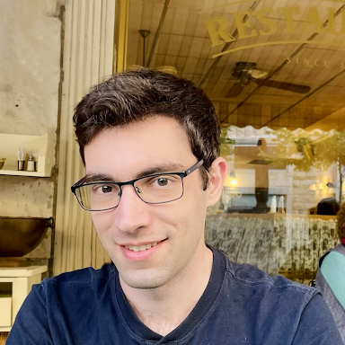

Yaniv Wolf
MSc Student in Computer Vision, Technion
About Me
I am a computer vision researcher and engineer. I completed my MSc at the Technion CS faculty, supervised by Professor Ron Kimmel, focusing on 3D representation, reconstruction, and generation.
Currently, I am part of the AI and Computer Vision R&D team at Lumana, helping develop state-of-the-art video analysis solutions.
Publications

GS2Mesh: Surface Reconstruction from Gaussian Splatting via Novel Stereo Views
Yaniv Wolf*, Amit Bracha*, Ron Kimmel
ECCV 2024
TL;DR: We present a fast and accurate method to reconstruct smooth, geometrically-consistent surfaces from any Gaussian Splatting (GS) model, by utilizing the superior novel view synthesis capabilities of GS and the strong 3D data-driven prior of stereo correspondence models.
Education
| 2023-2025 | MSc in Computer Science - Technion - Israel Institute of Technology |
| 2019-2023 | BSc in Computer Science - Technion - Israel Institute of Technology |
Experience
| 2025-Present | AI and Computer Vision Research and Development at Lumana |
Talks
| May 12, 2025 | Dagstuhl Seminar on Generative Models for 3D Vision - "3D Foundation Models for Enhanced Geometry from Gaussian Splatting" |
| Dec 16, 2024 | Israel Computer Vision Day 2024 - "GS2Mesh: Surface Reconstruction from Gaussian Splatting via Novel Stereo Views" (video, start at 3:12:08) |
| Nov 17, 2024 | Workshop on Nano Satellites, Volcani Institute - "Gaussian Splatting for Multi‐View Geometry Reconstruction" |
Contact
For inquiries or collaboration, please email me at: yaniv.wolf@gmail.com